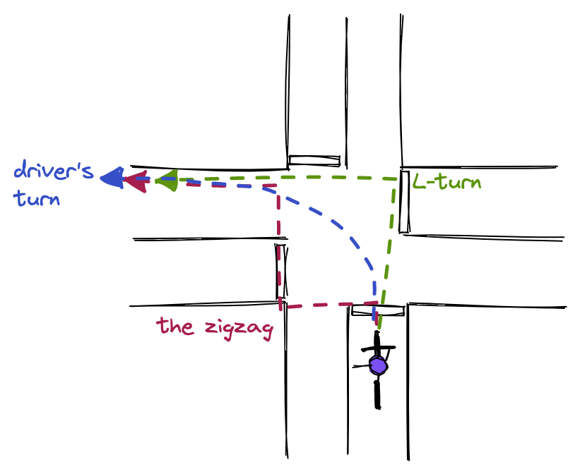
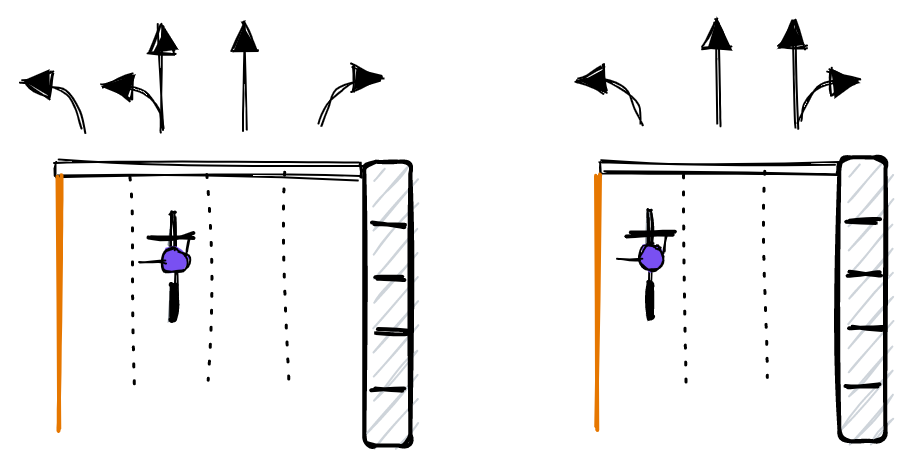
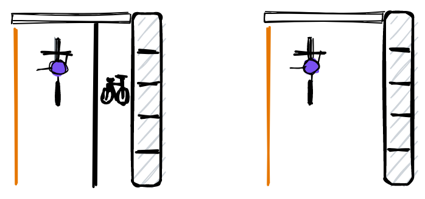
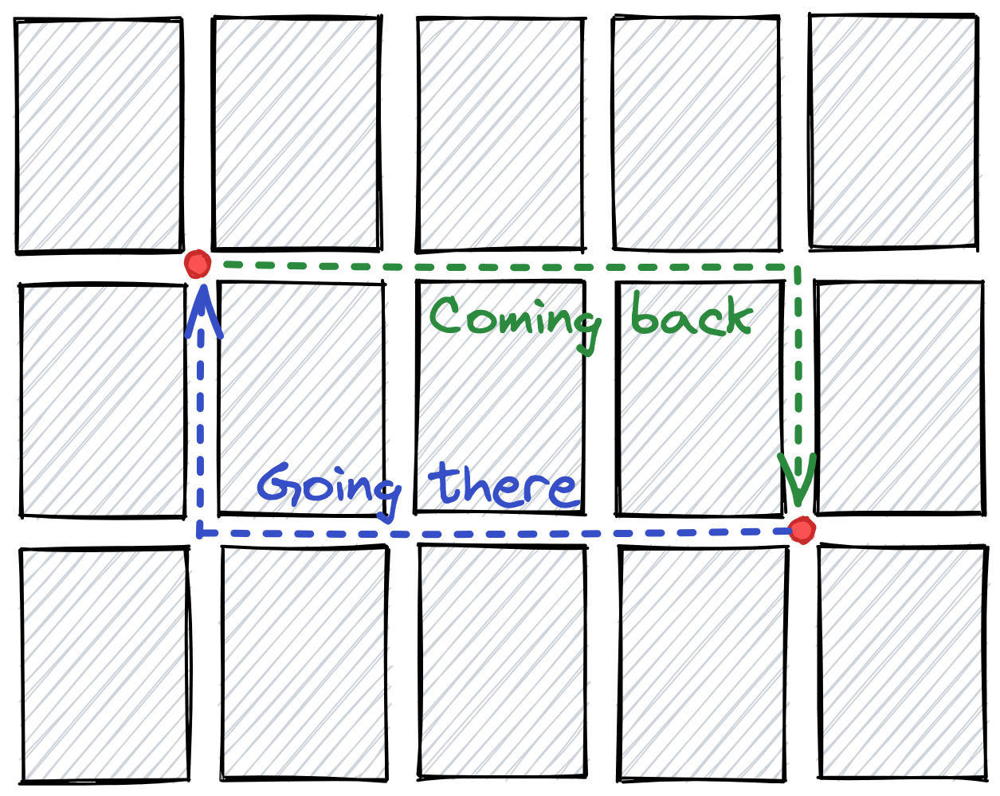

Actually, left turns are one of the most tricky situations to handle for novice or experienced cyclists alike. They can be a source of confusion and stress, and even trigger conflicts between drivers and cyclists.
En fait, les virages à gauche sont l'une des situations les plus délicates, autant pour les cyclistes débutants qu'expérimentés. Ils peuvent être une source de confusion et de stress, et même provoquer des conflits entre automobilistes et cyclistes.
For this reason, it is important to carefully plan one's route to minimize the occurence of difficult left turns. When they cannot be avoided, one should ideally decide ahead of time what strategy will be used at a given intersection. In my experience, leaving that decision to the last minute can lead to impulsive and unsafe riding.
C'est pourquoi il est important de bien planifier son trajet pour limiter les virages à gauche difficiles. Quand on ne peut pas les éviter, on devrait idéalement décider d'avance de la stratégie à adopter à une intersection donnée. D'après mon expérience, prendre cette décision à la dernière minute peut mener à une conduite impulsive et dangereuse.
In most of the world, traffic keeps to the right side of the road. This being said, a around a third of the world population lives under left-hand traffic (LHT) rules.
Dans la plupart des pays, on circule à droite. Cela dit, environ le tiers de la population mondiale vit sous des règles de circulation à gauche.
Britain aside, many of the places that still have LHT are former British colonies, such as India, though there are others left-hand driving countries without a history of British colonialism like Japan and Indonesia.
Mis à part le Royaume-Uni, bon nombre des endroits où l'on circule encore à gauche sont d'anciennes colonies britanniques, comme l'Inde, bien que d'autres pays sans passé colonial britannique roulent aussi à gauche, comme le Japon et l'Indonésie.
As you might have guessed, this page is written under the assumption of right-hand traffic, though the concepts are analoguous for right turns in left-hand traffic zones.
Comme vous l'aurez deviné, cette page suppose une circulation à droite, mais les mêmes principes s'appliquent aux virages à droite là où l'on circule à gauche.
The following picture illustrates three common ways in which a cyclist can handle a left turn.
L'image suivante illustre trois façons courantes pour un cycliste d'effectuer un virage à gauche.

For the sake of this post, let's call them as follows (ordered in terms of preference):
Pour les besoins de cette page, appelons-les ainsi (par ordre de préférence) :
As the name hints, this type of turn simply consists in turning mostly like a car would. Although it sounds simple, many novice cyclists are intimidated by this maneuver because it involves taking space in the left lane, amongst traffic and far from the curb.
Comme son nom l'indique, ce type de virage consiste simplement à tourner à peu près comme le ferait une voiture. Ça semble simple, mais bien des cyclistes débutants sont intimidés par cette manœuvre, parce qu'elle demande de prendre sa place dans la voie de gauche, au milieu de la circulation et loin du trottoir.
It is ok not to feel comfortable turning this way and many cyclists who have ridden for a long time are still avoiding it. However, it can save time for those cyclists who feel at ease taking their share of the road.
C'est correct de ne pas être à l'aise de tourner de cette façon, et bien des cyclistes qui roulent depuis longtemps l'évitent encore. Elle peut toutefois faire gagner du temps à ceux qui sont à l'aise de prendre leur part de la route.
This turn is my personal favorite when it can be executed safely. In general, it is the fastest turn of the three as it requires at most a single traffic light cycle.
C'est mon virage préféré quand on peut l'effectuer en sécurité. En général, c'est le plus rapide des trois, puisqu'il demande au plus un seul cycle de feu.
Occasionally, a driver might take place on your right and turn left at the same time as you. This situation can happen if you are positioned too much towards the left-hand side or not clearly signalling your intention to turn left. Even if you did everything right, you may also simply be pushed around by an abusive driver who does not like waiting behind a cyclist.
À l'occasion, un conducteur peut se placer à votre droite et tourner à gauche en même temps que vous. Ça peut arriver si vous êtes trop à gauche ou si vous ne signalez pas clairement votre intention de tourner à gauche. Même si vous avez tout fait correctement, vous pouvez aussi simplement vous faire bousculer par un conducteur abusif qui n'aime pas attendre derrière un cycliste.
This happened to me once. After the turn, I was not able to move back towards the right-hand side of the street because a car would be on my right and was obviously not in a mood to yield to a cyclist. The driver probably thought it was fun to watch a poor cyclist stuck in the middle of a busy road making gestures of despair and stuck out her best finger. There is unfortunately not much to be done with such lunacy, and I accelerated to overtake the next car stuck in traffic.
C'est déjà arrivé une fois. Après le virage, je ne pouvais pas revenir vers la droite parce qu'une voiture était à ma droite et n'avait visiblement pas envie de céder le passage à un cycliste. La conductrice trouvait sûrement drôle de voir un pauvre cycliste coincé au milieu d'une rue achalandée faire des gestes de désespoir, et m'a gratifié de son plus beau doigt d'honneur. Il n'y a malheureusement pas grand-chose à faire face à une telle folie; j'ai accéléré pour dépasser la voiture suivante, prise dans la circulation.
Presumably, if the person behind the wheel seems like a decent human being and the error was done in good faith, it might be best to keep calm, signal right and hope that the driver will let you get through. Prevention is always a good idea - by staying in the center of the left lane, it becomes harder for a car to pretend you are not there.
Si la personne au volant semble correcte et que l'erreur était de bonne foi, il vaut sans doute mieux garder son calme, signaler à droite et espérer qu'elle vous laisse passer. La prévention reste une bonne idée : en restant au centre de la voie de gauche, il devient plus difficile pour une voiture de faire comme si vous n'étiez pas là.
This is the trickest part and is a skill that is improved with practice. The cyclist has to be positioned left by the time he reaches the stop line of the intersection.
C'est la partie la plus délicate, une habileté qui s'améliore avec la pratique. Le cycliste doit être placé à gauche au moment où il atteint la ligne d'arrêt de l'intersection.
I sometimes see novice cyclists suddently turning left from the right-hand side of the road once they reach the stop line. This is quite dangerous as the cyclist might cut off incoming traffic and surprise drivers. Because the cyclist has to look out both for traffic coming from behind and in the opposite direction, it is easy to make a mistake and fail to see a driver coming by.
Je vois parfois des cyclistes débutants tourner soudainement à gauche à partir du côté droit de la chaussée une fois arrivés à la ligne d'arrêt. C'est assez dangereux : le cycliste peut couper la route aux véhicules et surprendre les automobilistes. Comme il doit surveiller à la fois la circulation qui arrive derrière lui et celle en sens inverse, il est facile de se tromper et de ne pas voir arriver une voiture.
The better option is to make a move towards the left of the road ahead of the intersection, but it is not always easy. The ideal situation is when there is a gap in traffic around 10 seconds before arriving at the intersection, which makes it easy to move towards the left just in time and avoids staying there for an incomfortably long stretch of road.
La meilleure option est de se déplacer vers la gauche avant l'intersection, mais ce n'est pas toujours facile. L'idéal, c'est quand il y a un creux dans la circulation environ 10 secondes avant d'arriver à l'intersection : on peut alors se déplacer à gauche juste à temps, sans rester là sur une distance inconfortablement longue.
In theory the cyclist can move towards the left whenever the road is free behind him, which means that on busier roads he would be right to take his space on the left lane whenever conditions are safe to do so.
En théorie, le cycliste peut se déplacer vers la gauche dès que la voie est libre derrière lui, ce qui veut dire que sur les rues plus achalandées, il aurait raison de prendre sa place dans la voie de gauche dès que c'est sécuritaire.
In practice, this can be intimidating and I wouldn't recommend it for busier streets with high-speed traffic. I have been honked and overtaken by the right a few times trying this approach on main arteries and it's an unnecessary stress that I don't need in my day. Some cyclists are able to keep their cool and might be able to calmly explain to toxic drivers why it is their right to be there. If this is you, please keep it up! In other cases, the L-turn might be a wiser choice. With time, you will get a feel for the situations in which you are comfortable with performing this maneuver.
En pratique, ça peut être intimidant et je ne le recommanderais pas dans les rues achalandées où la circulation est rapide. Je me suis fait klaxonner et dépasser par la droite quelques fois en essayant cette approche sur de grandes artères, et c'est un stress inutile dont je n'ai pas besoin dans ma journée. Certains cyclistes arrivent à garder leur sang-froid et peuvent expliquer calmement aux automobilistes toxiques pourquoi ils ont le droit d'être là. Si c'est votre cas, continuez comme ça ! Sinon, le virage en L est peut-être un choix plus sage. Avec le temps, vous sentirez dans quelles situations vous êtes à l'aise d'effectuer cette manœuvre.
This is the basic maneuver that most cyclists would instinctively perform when they need to make a left turn.
C'est la manœuvre de base que la plupart des cyclistes font instinctivement quand ils doivent tourner à gauche.
With L-turns, the intersection is crossed in two steps and the cyclist always stays on the right-hand side of road. It is a perfectly fine turn, though maybe "boring", and well-suited to busy or large intersections.
Avec le virage en L, on traverse l'intersection en deux temps et le cycliste reste toujours du côté droit de la chaussée. C'est un virage tout à fait correct, peut-être un peu « ennuyant », et bien adapté aux intersections achalandées ou larges.
In some cases, one might have been preparing for an L-turn but decides to change to a botched driver's turn at the last minute. This is tempting as it allows completing the maneuver in one single cycle. In my opinion, this is not a safe behavior and should be avoided, but hey, we're all humans.
Il arrive qu'on se prépare à un virage en L, puis qu'on change d'idée à la dernière minute pour un virage automobiliste improvisé. C'est tentant, puisque ça permet de faire la manœuvre en un seul cycle de feu. À mon avis, ce n'est pas un comportement sécuritaire et il vaut mieux l'éviter, mais bon, on est tous humains.
I find that it helps to plan the left-turn strategy ahead of time to prevent this impulsive move. If this happens a lot at a specific intersection on your commute, it might be a sign that it would be better handled through a driver's turn.
Je trouve qu'il est utile de planifier sa stratégie de virage d'avance pour éviter ce réflexe impulsif. Si ça vous arrive souvent à une intersection précise de votre trajet, c'est peut-être signe qu'un virage automobiliste y serait plus approprié.
As a general rule, one should avoid blocking any type of traffic while waiting at the far corner (pedestrian, cycling or driving). If there are cycling or pedestrian lanes near where you are waiting, or if the car traffic comes close to the sidewalk, you want to make sure you are out of the way. This is usually the main reason why I would wait on the sidewalk as opposed to on the street.
En règle générale, il faut éviter de bloquer quelque circulation que ce soit (piétons, cyclistes ou automobiles) en attendant au coin opposé. S'il y a des voies cyclables ou piétonnes près de l'endroit où vous attendez, ou si les voitures passent près du trottoir, assurez-vous de ne pas être dans le chemin. C'est habituellement la principale raison pour laquelle j'attends sur le trottoir plutôt que dans la rue.
This danger can be easy to overlook. When doing an L-turn and crossing from corner to corner, the cyclist is separated from the car traffic. After the second crossing, the cyclist has to quickly merge back onto the street to take his place in the curb and avoid obstacles such as parked cars.
Ce danger passe facilement inaperçu. Pendant un virage en L, en traversant d'un coin à l'autre, le cycliste est séparé de la circulation automobile. Après la deuxième traversée, il doit rapidement revenir dans la rue pour reprendre sa place en bordure et éviter les obstacles, comme les voitures stationnées.
When performed in a sudden manner, this move can surprise drivers, so it is important to signal your intention of merging back in the traffic, especially if the road is busy behind you.
Fait brusquement, ce mouvement peut surprendre les automobilistes; il est donc important de signaler votre intention de réintégrer la circulation, surtout si la rue est achalandée derrière vous.
This issue is less of a problem if you positioned yourself to be in the curb with the traffic on the perpendicular street while waiting for the second crossing. In some situations, it makes sense to reposition oneself at the corner bewteen the 1st and 2nd crossings to be ready to hit the road when the light turns green.
Le problème est moindre si vous vous êtes placé en bordure de la rue perpendiculaire, avec la circulation, en attendant la deuxième traversée. Dans certaines situations, il est logique de se repositionner au coin entre la 1re et la 2e traversée pour être prêt à reprendre la route quand le feu passe au vert.
What I call the "zigzag" move consists in crossing the current street first, then the perpendicular street. In some ways it is a mirror image of the L-turn, but because there are three 90° turns, it looks more like an ugly "Z" than a nice "L". As you might have guessed from the name, I find this maneuver tricky and dangerous and would not recommend it, unless done completely as a pedestrian.
Ce que j'appelle le « zigzag » consiste à traverser d'abord la rue où l'on se trouve, puis la rue perpendiculaire. D'une certaine façon, c'est l'image miroir du virage en L, mais comme il y a trois virages de 90°, ça ressemble plus à un vilain « Z » qu'à un beau « L ». Comme son nom le laisse deviner, je trouve cette manœuvre délicate et dangereuse, et je ne la recommande pas, à moins de la faire entièrement à pied.
The main reason I am against this move is that it puts the cyclist on the left side of the street while crossing which is not natural. Turning cars tend to not to be watchful for cyclists circulating on the left-hand side.
La principale raison pour laquelle je suis contre cette manœuvre, c'est qu'elle place le cycliste du côté gauche de la rue pendant la traversée, ce qui n'est pas naturel. Les voitures qui tournent ont tendance à ne pas surveiller les cyclistes qui circulent du côté gauche.
To make things worse, a cyclist will be tempted to cross the first street from a high-speed riding position in the lane, suddenly making a sharp left turn towards an unnatural direction. In my opinion, moving with the flow of the traffic is a common-sense strategy which is preferable to this type of maneuver. I will not further discuss it here, but would love your feedback on this part, especially if you find this move useful for you!
Pire encore, le cycliste sera tenté de traverser la première rue à partir de sa voie, à pleine vitesse, en faisant soudainement un virage serré à gauche dans une direction inattendue. À mon avis, suivre le flot de la circulation est une stratégie de gros bon sens, préférable à ce genre de manœuvre. Je n'en parlerai pas davantage ici, mais j'aimerais beaucoup avoir vos commentaires sur cette partie, surtout si cette manœuvre vous est utile !
In Canada, multi-lane intersections are often marked with arrows to indicate the allowed directions of traffic for each lane. When turning left, one should follow the rightmost lane where left turns are allowed. The reason is simple: after the turn, it has to be easy to move back to the curb. As discussed earlier, I would avoid getting too close to the left of the lane to make sure that cars wait behind. I find that staying in the center of the turning lane is usually a good rule of thumb.
Au Canada, les intersections à plusieurs voies sont souvent marquées de flèches qui indiquent les directions permises pour chaque voie. Pour tourner à gauche, il faut prendre la voie la plus à droite où le virage à gauche est permis. La raison est simple : après le virage, il doit être facile de revenir en bordure. Comme on l'a vu plus tôt, j'éviterais de me placer trop à gauche dans la voie, pour que les voitures attendent derrière. Rester au centre de la voie de virage est habituellement une bonne règle de base.
If the lane turning left also allows going straight, the cyclist might move a bit more towards the left as an to make it easier for drivers going straight to get around him.
Si la voie de virage à gauche permet aussi d'aller tout droit, le cycliste peut se placer un peu plus à gauche pour que les automobilistes qui vont tout droit puissent le contourner plus facilement.

For single lane streets, the cyclist should move towards the left of the lane before the turn. This fact is independent of whether there is a cycling lane on the street. Turning left from a cycling lane on the right-hand side of the street is against the Rule of Expected Behavior.
Dans les rues à une seule voie, le cycliste devrait se déplacer vers la gauche de la voie avant le virage, qu'il y ait ou non une bande cyclable dans la rue. Tourner à gauche à partir d'une bande cyclable du côté droit de la rue va à l'encontre de la règle du comportement attendu.
Unfortunately, bike "infrastructure" (if that's what we can call a painted line on the ground) is not always well thought-out and can encourage unsafe behavior. Note however that such cycling lanes could be used to make an L-turn instead.
Malheureusement, les « infrastructures » cyclables (si on peut appeler ainsi une ligne peinte au sol) ne sont pas toujours bien pensées et peuvent encourager des comportements dangereux. Notez toutefois que ces bandes cyclables peuvent servir à faire un virage en L.

Figuring out the best way to get somewhere on two wheels is one of the most important aspects of urban cycling. There are many factors to consider, but avoiding left turns at busy intersections is near the top of the list.
Trouver le meilleur chemin pour se rendre quelque part sur deux roues est l'un des aspects les plus importants du vélo urbain. Il y a bien des facteurs à considérer, mais éviter les virages à gauche aux intersections achalandées est près du haut de la liste.
What matters the most is the traffic on the street on which the cyclist is preparing the turn. Turning from a side street to a major artery (given there is a traffic light) is usually not a big deal, but the other way around can be more intimidating.
Ce qui compte le plus, c'est la circulation dans la rue où le cycliste prépare son virage. Tourner d'une rue secondaire vers une grande artère (s'il y a un feu) n'est habituellement pas bien compliqué, mais l'inverse peut être plus intimidant.
Sometimes, avoiding left turns might mean that the morning and evening commutes take diffent routes. The simplistic example below shows how travelling between two locations is possible by always turning right in either direction. Of course, real-life situations are not often as simple as this one but you get the idea. By carefully studying the street grid along one's commute, it is sometimes possible to optimize it to minimize the amount of left turns, or at least make it such that they occur at intersections that are not so wide or busy.
Parfois, éviter les virages à gauche veut dire prendre des chemins différents le matin et le soir. L'exemple simplifié ci-dessous montre comment on peut se déplacer entre deux endroits en tournant toujours à droite, dans un sens comme dans l'autre. Bien sûr, la réalité est rarement aussi simple, mais vous voyez l'idée. En étudiant attentivement le quadrillage des rues le long de son trajet, on peut parfois l'optimiser pour réduire le nombre de virages à gauche, ou du moins faire en sorte qu'ils se fassent à des intersections moins larges ou moins achalandées.
